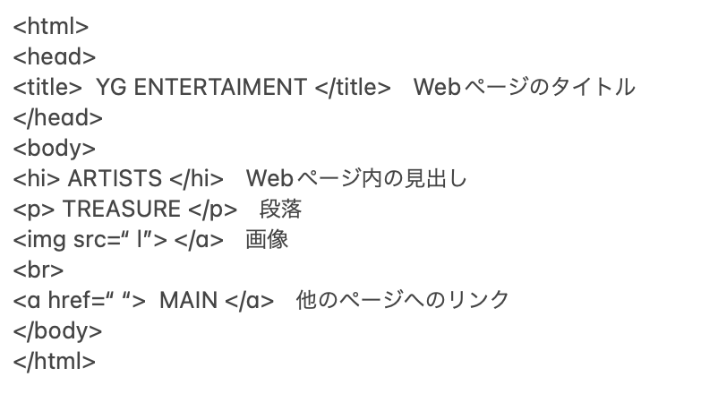
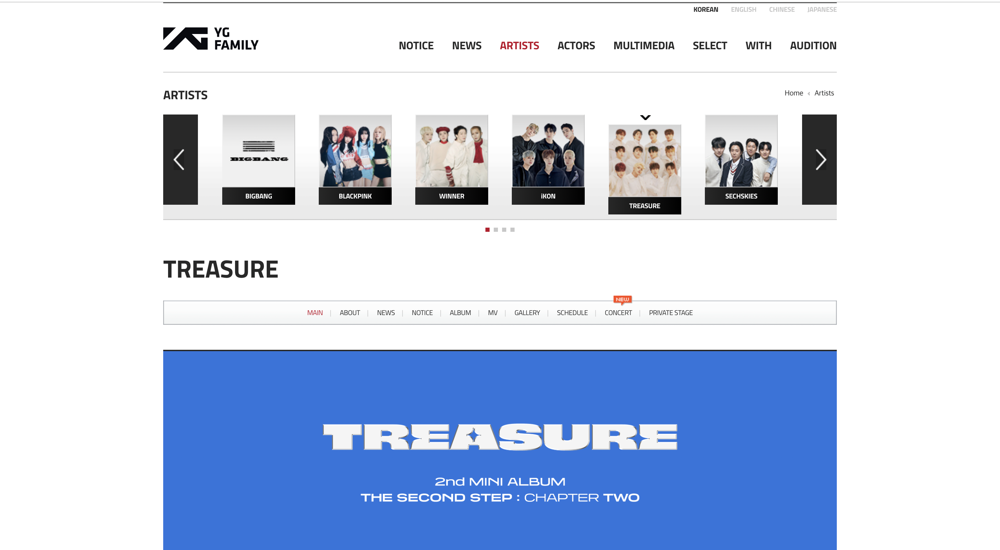

gitついて
[メリット]
gitを使用することで、編集履歴の管理が簡単となる上に、一度行った編集を元に戻すことが可能となる。
その他に共同作業が可能なほか異なる保存場所を切り替えられる。
[デメリット]
一方でGithub上のソースコードは実用的なプログラミングになるのでその人のスキルが明確に分かることになるので、
私のような機械音痴にはスキル不足と判断される可能性がある。
htmlについて
（Hyper Text Markup Languageの略）
Webページは、HTMLという言語で記述されている。ブラウザは、HTMLを読み込み、ページの構造やレイアウトを解読して、Webページとして表示する。HTMLには、次のような特徴がある。
- 文字だけでなく、静止画、動画、音声など、複数の情報メディアを同時に扱うことができる。
- 現在のページから、ほかのページや画像などへ移動できるようにハイパーリンク（リンクと呼ぶこともある。）を設定できる。
なお、ハイパーリンクによりほかのページなどと相互に行き来ができる仕組みをハイパーテキストという。
- ブラウザがあれば、携帯電話などのパソコン以外の機器からも表示可能である。
